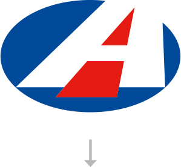
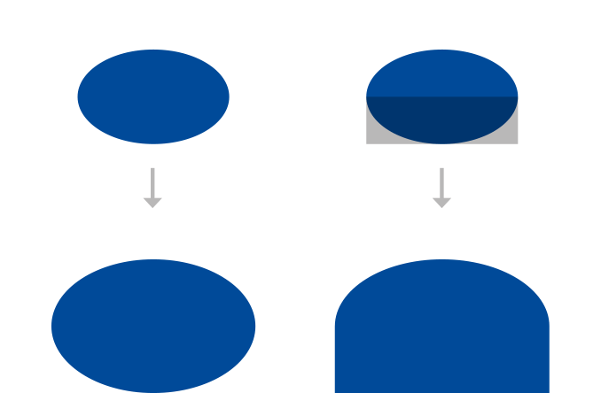
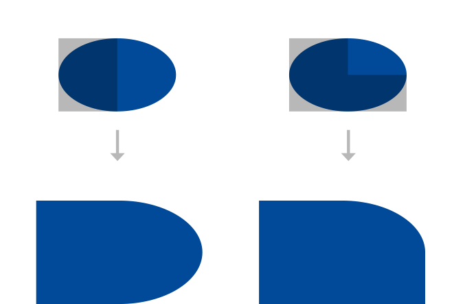
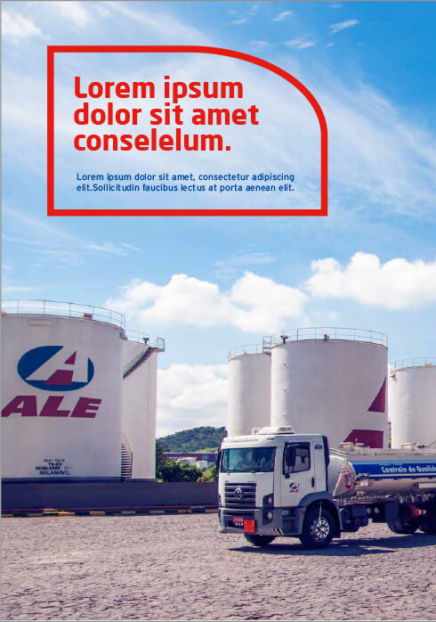
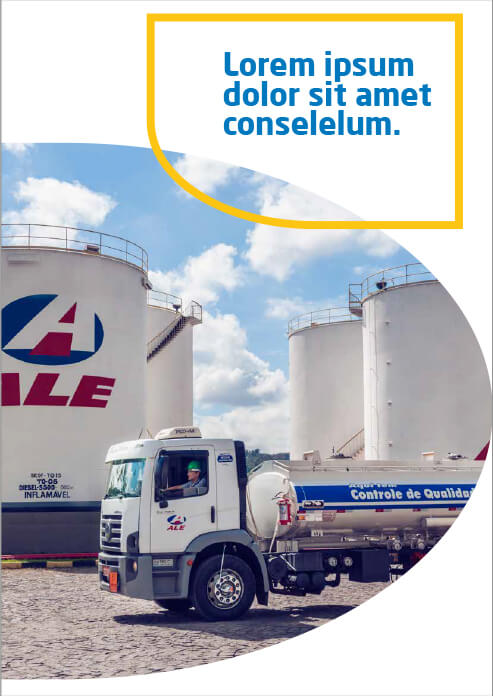
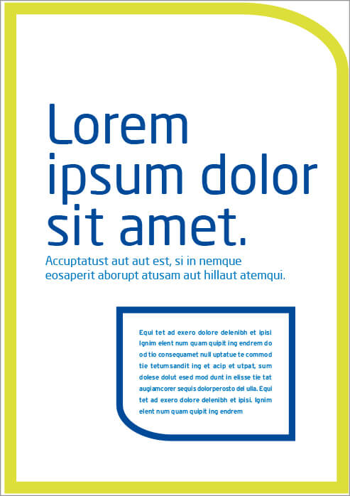
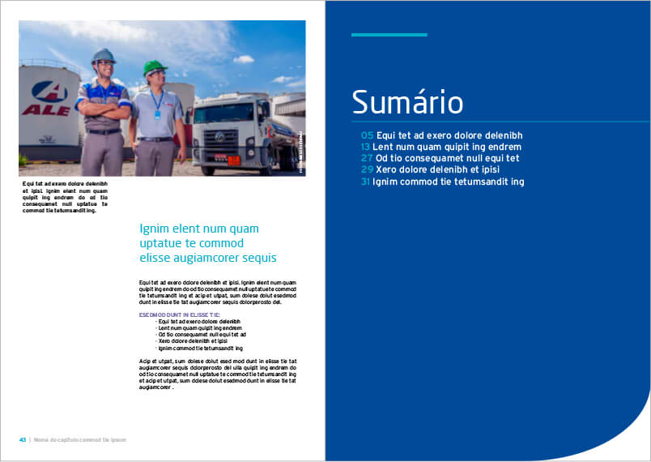
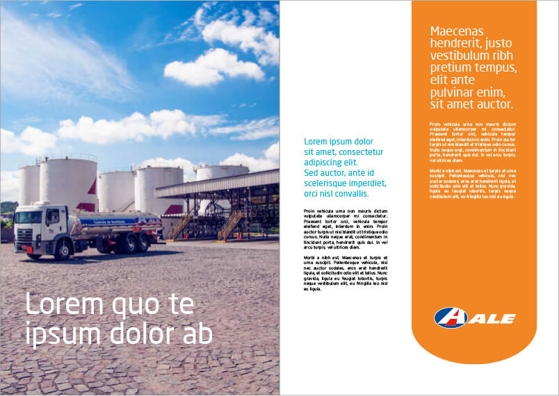

Novas formas
Vocabulário Gráfico
As novas formas podem ser aumentadas proporcionalmente ou através dos pontos das suas bases retas. A curvatura nunca pode se alterar.

Visão geral
Vocabulário gráfico
Este é um exemplo incrivelmente versátil, mas sua inclusão não é obrigatória (por exemplo, itens promocionais).
Além das formas com cores chapadas, podemos ainda utilizar o "multiply" ou transparência, o fio de contorno e também o shape com foto.
Use as formas com criatividade. Elas são um poderoso aliado para harmonia e unidade de suas peças.
A seguir, veja mais exemplos de como podem se comportar as composições que utilizam o vocabulário gráfico.
Exemplos
Com fio



Baixe aqui os arquivos
Exemplos com
Vocabulário gráfico

